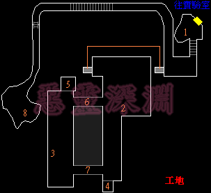

|
惡靈古堡∼惡靈古堡４----地圖攻略∼Final
|
|
攻略內容以Normal為主，地圖上標綠色的道具是過關必須的重要道具。
在實驗室開始，一路上都不會有危險了，在往工地的門前有一些道具，以及file 教團的最終目的。
 在編號1回收道具。因為待會就要進入最終決戰了，找武器商人買個恢復藥吧，有需要的人可以買隻火箭砲。 下樓梯之後，Ashley被 留下，Leon獨自搭上升降梯往最終決戰場地。 和Saddler的最終決戰開始，Saddler除了近距離攻擊，遠距離會利用鋼柱、鋼條等物品攻擊，也會遠距離高空跳到Leon附近。他的四 隻腳上有眼睛，中央的長觸手上也有一個，長觸手上這一個是他的核心。當Saddler受到一定攻擊時，就會伏在地上，並展露出他觸 手上的眼睛。要讓他受到一定攻擊，最有效的方法就是攻擊四隻腳上的眼睛，更好的方法是善用附近的道具。
在編號2、3都有一個油桶；編號4、5各有開關，可以控制綁著鋼條的吊臂；編號6、7則有浮動式的橋，當旁邊的燈號顯示綠色，代 表可以安全通過，閃綠燈時代表橋即將要收起，必須趕快通過，或按複合按鍵跳越過去，紅燈表示橋已收起無法通過。 給予Saddler一定的傷害後，Ada會丟下有特殊彈的火箭砲在編號3附近，若是有射中，可以讓Saddler一發斃命。就算不使用特殊彈， 還是可以將Saddler打倒。 使用火箭砲的打法： 在第一次讓Saddler伏在地上時，由於有動畫的關係，若是玩家在動畫之後才架起火箭砲瞄準，一定會來不及攻擊到他的弱點。使用 火箭砲的玩家，務必要在他第二次伏地時使用，在他要伏地時立刻換上火箭砲並架起瞄準，不要等他已經伏在地上才把火箭砲架起 喔。 勝利之後，Ada出現奪走了樣本，按下倒數3分鐘的爆炸計時，並給Leon附有小熊的水上摩托車的鑰匙。 動畫結束，附近有什麼道具可以先去回收，身上的道具在使用破關存檔重新開始遊戲時都會被繼承，若是方才的Boss戰沒有使用特 殊彈火箭砲也記得帶走，那可以賣30000ptas，但是在剩1分45秒前最好趕緊搭升降梯離開。現在的目的地是編號8，途中有個梯子， 別忘了要接Ashley跳下來。 在編號8搭上水上摩托車，摩托車的操縱方式：摩托車會自己前進，並隨著水道的轉彎而轉彎，按「↑」加速，按「←」、「→」 進行左右移動。若是搭上摩托車後時間已經剩不到1分鐘，那最好一開始就加速。途中需要按「←」、「→」來閃躲障礙，進行一 段之後，後方有大浪追來，此時必須按「↑」加速到最後，但是也別忘了要閃躲前方的障礙。 出了水道之後，遊戲就破關了。
疑難解答
金錢、最大生命值都會被保留下來，如此一來，第二輪的遊戲就會簡單多了呢。 未經許可禁止轉載連結 |
惡靈深淵Biohazard Abyss http://98.to/coolbio